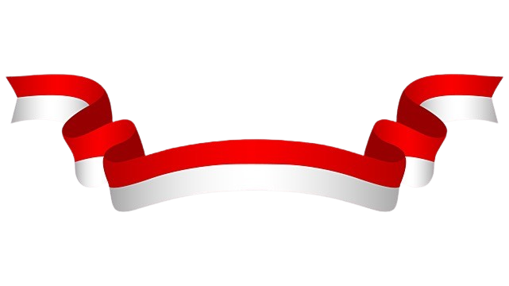

Hai-hai semuaaaa! Pepatah berkata, “Tak kenal maka tak sayang, kalo udah kenal jangan terlalu sayang.” Jadi kita kenalan dulu yuk. Perkenalkan nama aku Valerie Faye biasa dipanggil Faye. Aku bersekolah di SMP Santa Ursula Jakarta kelas IX-4 nomor absen 33. Di web ini aku akan menjelaskan banyak hal ke kalian yang membuka web ini. Aku akan menjelaskan apa itu kerjasama, manfaat kerjasama, apa saja jenis-jenis kerjasama, dll. Aku akan menjelaskan salah satu kerja sama yang dilakukan Indonesia dengan negara luar yaitu SDGs, apa sih SDGs? Kalo kalian mau tau tentang ini semua silahkan lanjut klik tombol diatas.
